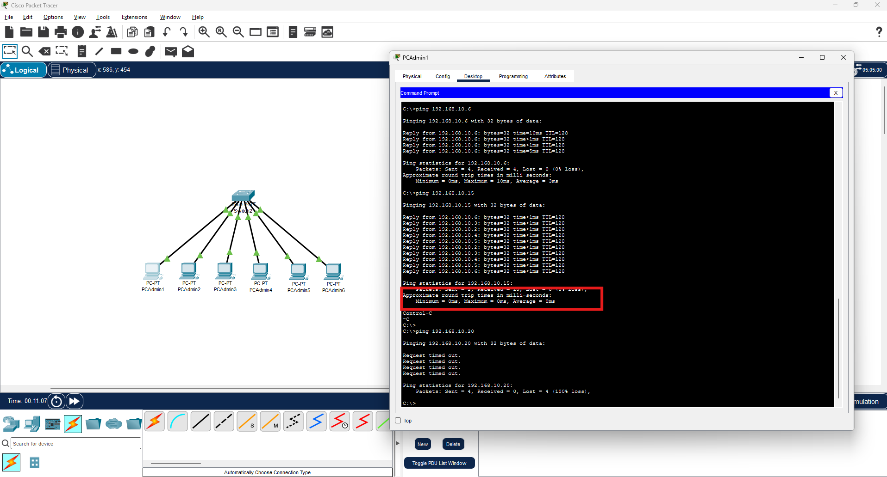
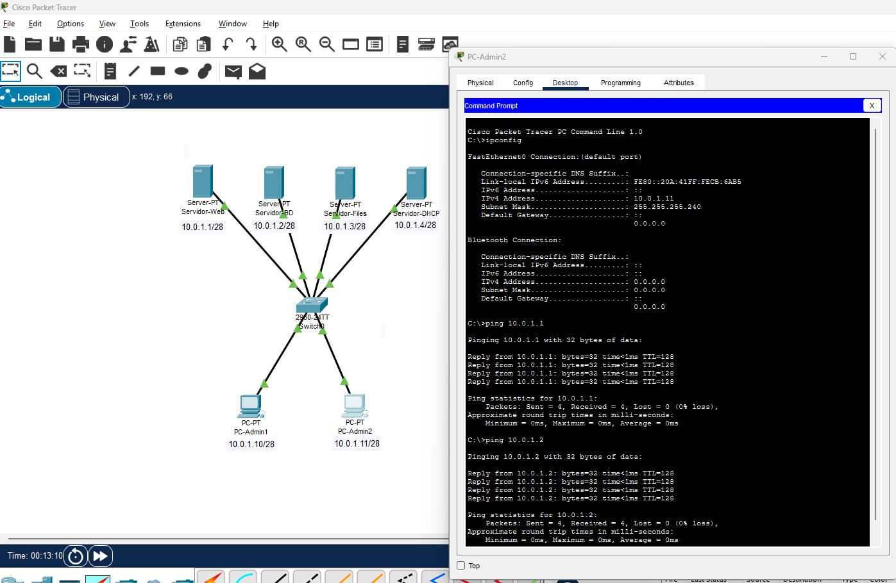

Ejercicios de redes LAN
Ya sabemos montar una red sencilla y verificar su conectividad. Ahora vamos a practicar con escenarios más realistas que nos preparan para el proyecto final. Estos ejercicios combinan todo lo visto hasta ahora: subnetting, elección de máscara, configuración de IPs y verificación con ping.
En cada ejercicio el proceso es siempre el mismo:
- Analizar los requisitos (cuántos equipos, qué red usar)
- Calcular la máscara adecuada según el número de equipos
- Montar la topología en Packet Tracer
- Configurar las IPs de cada dispositivo
- Verificar la conectividad con ping e ipconfig
Ejercicio 1 — Red de un departamento pequeño
Escenario: El departamento de Administración de TechSolutions S.L. tiene 6 equipos que necesitan estar en red. Usaremos el bloque 192.168.10.0.
Paso 1 — Elegir la máscara:
6 equipos → con margen → ~8 hosts → 2⁴ = 16 → 14 hosts utilizables → /28 (255.255.255.240)
Paso 2 — Calcular la subred:
Red: 192.168.10.0/28
Primer host: 192.168.10.1
Último host: 192.168.10.14
Broadcast: 192.168.10.15
Hosts útiles: 14
Paso 3 — Asignación de IPs:
| Dispositivo | IP | Máscara |
|---|---|---|
| PC-Admin1 | 192.168.10.1 | 255.255.255.240 |
| PC-Admin2 | 192.168.10.2 | 255.255.255.240 |
| PC-Admin3 | 192.168.10.3 | 255.255.255.240 |
| PC-Admin4 | 192.168.10.4 | 255.255.255.240 |
| PC-Admin5 | 192.168.10.5 | 255.255.255.240 |
| PC-Admin6 | 192.168.10.6 | 255.255.255.240 |
Monta esta red en Packet Tracer y verifica:
pingdesde PC-Admin1 a PC-Admin6 → debe funcionarping 192.168.10.15desde cualquier PC → responde de forma incoherente (es el broadcast, no un host)ping 192.168.10.20desde cualquier PC → debe fallar (fuera de la subred)


¿Por qué falla el ping a 192.168.10.15?
Porque .15 es la dirección de broadcast de esta subred /28. Las direcciones de broadcast no se asignan a hosts y responden de forma masiva a ping — están reservadas para enviar mensajes a todos los dispositivos de la red simultáneamente.
Ejercicio 2 — Dos departamentos, una misma red física
Escenario: TechSolutions tiene Desarrollo (8 PCs) y Dirección (3 PCs) en la misma planta. Comparten el mismo switch pero queremos organizarlos en subredes separadas usando el bloque 172.16.0.0.
Paso 1 — Calcular subredes:
- Desarrollo: 8 PCs → /28 (14 hosts) →
172.16.0.0/28→ hosts:.1–.14 - Dirección: 3 PCs → /29 (6 hosts) →
172.16.0.16/29→ hosts:.17–.22
Paso 2 — Asignación:
| Dispositivo | IP | Máscara | Subred |
|---|---|---|---|
| PC-Dev1 | 172.16.0.1 | 255.255.255.240 | Desarrollo |
| PC-Dev2 | 172.16.0.2 | 255.255.255.240 | Desarrollo |
| PC-Dev3 | 172.16.0.3 | 255.255.255.240 | Desarrollo |
| PC-Dev4 | 172.16.0.4 | 255.255.255.240 | Desarrollo |
| PC-Dev5 | 172.16.0.5 | 255.255.255.240 | Desarrollo |
| PC-Dev6 | 172.16.0.6 | 255.255.255.240 | Desarrollo |
| PC-Dev7 | 172.16.0.7 | 255.255.255.240 | Desarrollo |
| PC-Dev8 | 172.16.0.8 | 255.255.255.240 | Desarrollo |
| PC-Dir1 | 172.16.0.17 | 255.255.255.248 | Dirección |
| PC-Dir2 | 172.16.0.18 | 255.255.255.248 | Dirección |
| PC-Dir3 | 172.16.0.19 | 255.255.255.248 | Dirección |
Monta esta red y verifica:
- Ping entre PC-Dev1 y PC-Dev8 → ✅ debe funcionar (misma subred)
- Ping entre PC-Dir1 y PC-Dir3 → ✅ debe funcionar (misma subred)
- Ping entre PC-Dev1 y PC-Dir1 → ❌ debe fallar (subredes distintas, no hay router)
¿Por qué falla el ping entre subredes aunque estén en el mismo switch?
Aunque los dos grupos de PCs están físicamente conectados al mismo switch, sus IPs pertenecen a redes lógicas diferentes. El switch trabaja en capa 2 (MAC) y reenvía tramas, pero para comunicar redes distintas se necesita un dispositivo de capa 3: el router. Lo veremos en el punto 4.
Ejercicio 3 — Red con servidor
Escenario: El departamento de Servidores tiene 4 servidores físicos y 2 PCs de administración. Red disponible: 10.0.1.0. Necesitan todos estar en la misma subred.
Paso 1 — Calcular:
6 equipos → /28 (14 hosts útiles) → 10.0.1.0/28
Paso 2 — Asignación (por convención, los servidores tienen IPs bajas y los PCs IPs más altas):
| Dispositivo | Tipo | IP |
|---|---|---|
| Servidor-Web | Server | 10.0.1.1 |
| Servidor-BD | Server | 10.0.1.2 |
| Servidor-Files | Server | 10.0.1.3 |
| Servidor-DHCP | Server | 10.0.1.4 |
| PC-Admin1 | PC | 10.0.1.10 |
| PC-Admin2 | PC | 10.0.1.11 |
En Packet Tracer:
Para añadir un servidor: panel de dispositivos → End Devices → Server. Un servidor en PT tiene las mismas pestañas que un PC más la pestaña Services donde se pueden activar servicios (HTTP, DNS, DHCP...).
Si has usado el Switch 2960 verás que tiene 2 tarjetas GigaByte. Investiga cómo sacar el máximo provecho y decide a qué servidores conectarlas
Verifica:
- Ping desde PC-Admin1 a Servidor-Web → ✅
- Ping desde Servidor-Web a Servidor-BD → ✅
- Ping desde PC-Admin1 a
10.0.1.15→ ❌ (broadcast)


Ejercicio 4 — Detección y corrección de errores
Escenario: Imagina que te entregan un fichero .pkt con una red mal configurada. Tienes que identificar los errores y corregirlos.
La red debería tener 4 PCs en la red 192.168.5.0/26 pero hay varios problemas.
Genera un fichero con errores y lo envias a unos de tus compañeros...
Posibles errores que puede haber (no todos tienen porque estar presentes):
- IP de un PC fuera del rango de la subred
- Máscara incorrecta en algún PC
- IP duplicada (dos PCs con la misma IP)
- Cable desconectado o tipo de cable incorrecto
- IP de broadcast asignada a un host
Proceso de diagnóstico:
- Revisa visualmente los indicadores de enlace — ¿hay alguno en rojo?
- Haz
ipconfigen cada PC y anota las IPs y máscaras. - Calcula manualmente el rango válido de la subred
/26:- Red:
192.168.5.0 - Hosts válidos:
192.168.5.1–192.168.5.62 - Broadcast:
192.168.5.63
- Red:
- Verifica si alguna IP está fuera de rango o si hay duplicadas.
- Haz ping entre todos los pares de PCs y anota cuáles fallan.
- Corrige los errores uno a uno y verifica después de cada corrección.
Metodología de diagnóstico
Siempre de lo más simple a lo más complejo: primero verifica los cables (capa física), después las IPs y máscaras (capa red), y finalmente la configuración lógica. El mismo proceso que seguiremos en redes reales con Windows Server.